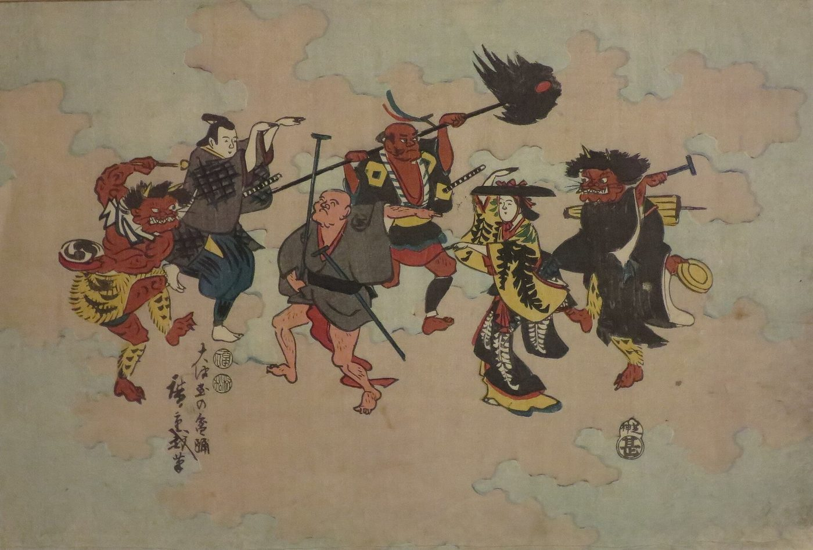

スパイラルダイナミクス › 2 / 7
紫の段階
部族と祖先と精霊の段階。自分は個人ではなく、一族の一部。世界は魔法に満ちていて、言葉には力があり、先祖のやり方を守ることが命を守ることだった。人類が何十万年も生きてきた形で、いまも世界の一割ほどの人がここに重心を置いていると言われています。この段階が何を大事にし、どこに現れ、いまの自分の中にどう残っていて、次の段階へ移るときに何が壁になるのか。氏神、村八分、守護霊といった日本語の言葉との重なり。

螺旋の、実質的な最初の段階です。その下にベージュ（ただ生き延びる段階）がありますが、この理論を紹介する動画は「私たちの作業には関係が薄い」として、紫から始めています。紫は部族の一員であることの段階です。人類は、何十万年ものあいだ、この形で生きてきました。
いま、この分野で目覚めの話を読んでいる人の多くは、橙や緑のあたりに重心があると言われています。それでも、このページから読むことに意味があるのは、動画の言い方を借りれば「上の段階に育った人ほど、下の段階に穴があいている」からです。紫の穴は、人とつながれないこと、自然から切れていること、として現れます。
どんな段階か
「今日の私たちは、個人の権利、個人の家、個人の車、という考え方を、文化からあまりに深く教え込まれているので、人類がずっとそう考えてきたと思い込んでいる。でも、個人という自己像は、比較的新しいもので、数百年か、せいぜい千年ほどのものです。人類の歴史の大半は共同の暮らしで、自分の土地、自分の家、自分の銃、という感覚はなかった。いまでも、世界の半分ほどは、個人としての生存が不可能な条件で生きています」
動画は、人類がかつて「森でひとりで生きる個人」だった時代は一度もない、と念を押しています。「最も近い親戚であるチンパンジーやボノボを見ればいい。森をひとりで歩くチンパンジーは、決して見つからない」。20人、50人、100人という規模の群れが、人の生存の単位だった、と。
「この段階の暮らしは、共同であるだけでなく、深く神秘的です。魔法のかかった村の中で生きているような感覚がある」。まだ科学も、進んだ道具もない。生存は、水、土、魚、動物、太陽、月に、直接かかっている。だから自然への畏れがあり、精霊たちがいて、その望みに従う。動画はこれを「アニミズム的、シャーマン的な精神性」と呼んでいます。
「雨乞いの踊りをすると、雨が降ると信じられている。祖先を辱めたら、来年の作物が悪くなる、と。原因と結果の見方が、機械的ではなく、魔法的なんです。雷が何なのか、地震が何なのか、火が何なのか、まだ誰も知らない。だから、すべてが深く不思議に見える」
動画が読み上げている価値のリストは、長いものです。要点だけを並べます。
・一族、血のつながり、共に暮らすこと、一族への貢献。人生の意味は、そこから来る
・名誉、謙虚さ、自己犠牲。「これは上から押しつけられた重荷ではなく、自分の家族のためなら喜んで働くのと同じ気持ちです」
・年長者、祖先、慣習への敬意。禁忌、儀式、伝統。「やり方は決まっていて、創意工夫の余地はあまりない」
・母なる自然との調和。精霊、通過儀礼、聖なる物と場所、伝統の音楽と踊りと衣装
・神話と物語。文字がない文化なので、一族の歴史は物語として記憶され、できるだけ忠実に次の世代へ渡される
・分かち合いと互恵。「今日、私の魚が余っていたら、あなたにあげる。来週、あなたの魚が余ったら、私にくれる。自然の保険です」
・悪霊を退けること、敵を呪うこと、霊的な力。家宝、お守り、祠。そして言葉の力。「言葉は辞書に載っているものではなく、祈りにも呪いにもなる、聖なるものです」
動画は、なぜ伝統がこれほど重いのかを、こう説明しています。「間違った植物を食べたら、死ぬ。病院はないし、救急車も来ない。伝統は、祖先が何百年、何千年もかけて、試行錯誤で見つけたものです。多くの人が死んで、それでも見つけた。いまの自分の命は、それに乗っている。だから疑わずに従う。単なる懐古ではなく、文字どおり、生存がかかっている」。
どこに現れるか
動画は、この段階の統治を「小さな規模の、本来の意味での共産主義」と呼んでいます。正式な法も、裁判所も、市場も、軍も、税もない。長老の集まりが調整するが、独裁ではない。「族長は、部族の中の権力者ではありません。経験を積んで、知恵があって、私利を求めずに部族に仕える人です。何層もの部下がいるピラミッドではなく、族長は一人ひとりと情でつながっている」。財は、必要に応じて分けられる。
世界の成人の一割ほどがこの段階にあり、しかし世界への影響力は一パーセントほどだ、と動画は見積もっています（この数字は、動画が引いているもので、出どころは示されていません）。
アマゾンやパプアニューギニアやアフリカの部族、アメリカ先住民の諸部族、オーストラリアのアボリジニ、ニュージーランドのマオリ、ハワイの伝統文化、中東の農村部の氏族社会、インドとチベットと中国の農村部の土着の精神性。カルロス・カスタネダの「ドン・ファン」の本。ジョゼフ・キャンベルが集めた神話。ラスコーの洞窟画、ストーンヘンジ、トーテムポール、通過儀礼、汗小屋、ビジョン・クエスト。呪術、お守り、縁起かつぎ、「木を叩く」「黒猫」といった迷信、占星術。
動画は、日本のものも挙げています。「神道は、起源において紫の段階です。仏教とは別のもので、儀式に満ちていて、カミの崇拝を中心にしている。カミは一神教の神ではなく、自然のすべてに行きわたる生命の霊のようなもの」。招き猫も、その例として出てきます。「これは千年前のものではなく、たぶん百年か二百年前のものだけれど、それでも紫です。紫のものは、いまも作られ続けている」。ゼルダの伝説の世界の空気を、動画は神道から来たものだろう、と推し測っています。
上の例のいくつかについて、動画の話し手は「文明化されていない」「原始的」「恐竜のように取り残された」という言葉を、留保付きながら使っています。また、アメリカ先住民が滅ぼされた歴史について「白人が悪い、という意味でも、そうでない意味でもある。適応できなかった」という言い方もしています。これは話し手の見方で、この理論そのものの主張ではありません。理論の側は、どの段階も「置かれた条件への答え」であって、良くも悪くもない、という立場をとっています。
いまの自分の中にあるもの
動画がいちばん力を入れているのは、都市に住む現代の読者にとって、この段階がどこにあるか、という話です。
「一人ひとりの人生では、紫は幼稚園や小学校で始まります。ほかの子どもと遊ぶこと、分け合うこと、礼儀を守ること、相手の合図や感情を読むこと、意地悪すぎないこと、いじめられないこと、友達を作ること。そこには一種の政治がある。中学、高校になると、誰がいちばん格好いいか、どうすれば格好いい子たちと付き合えるか、という社会の駆け引きになる。ここでつまずいた人は、大人になってもつまずいている。とくに内向的な人は」
動画は、この段階が抜けている人の姿を、かなり具体的に描いています。「橙や緑の文化で育った人は、下の段階に穴があいている。人とつながれない、社会的な不安がある、自然から切れている。こういう人は、パソコンの前で何年も過ごして、森で鳥の声を聞いた最後がいつだったか、思い出せない」。
そのうえで、紫から学び直せることとして、動画は次を挙げています。
・親密な絆を作ること、人と自然に付き合えること。「人が自分と付き合わないのは、顔立ちのせいでも、頭のせいでもない。人と顔を合わせて過ごす時間がないからです」
・人間は深く共同的な種だということ。「税金は盗みだ、と言う人は、紫の学びを受け取っていない。共同体の一員であることは、犠牲を払うことです」
・人類全体を、自分の家族のように扱うこと。人種や民族を、よそ者や下位の者にしないこと
・利益の外にある人生。「人生の質は、欲しがっている持ち物より、絆の質で決まるとしたら」
・自然の価値。「森へ、山へ、砂漠へ行くこと。友達と一緒なら、なおいい」
・論理より感情と直観。「頭ではなく、体と心から生きること」
・年長者の知恵と、古い伝統に含まれる知恵。「伝統は、いつも愚かで無意味なわけではない」
・暮らしを遅くすること。「することより、あること」。単純で有機的な食べ物
動画は、この分野との関係にも触れています。「緑の段階は、物質主義への反動として、紫を振り返ります。ヒッピーがやっているのがそれです。シャーマニズム、植物の薬、有機農業、ドラムサークル。カスタネダの本が1960年代の後に何百万部も売れたのは、そのためです」。そして、「紫の神秘の伝統の中には、深く実践的な精神的な知恵がある。全部が作り話や魔法思考ではない」と、何度も繰り返しています。
次の段階への壁
動画が「紫の引き金」として挙げているのは、伝統・年長者・祖先・精霊への敬意を欠くこと、絆と互恵を欠くこと、「自分のことだけをする」個人主義、傲慢さと野心と欲、そして革新と進歩と変化です。「紫は、祖先がずっとやってきたやり方で、やり続けたい。進化にも革新にも興味がない。そして、それが最後には紫の弱点になる」。ほかの部族、ほかの習慣、ほかの世界観も、紫を混乱させる。「彼らのやり方のほうがいいかもしれない、とは考えない。我々のやり方だけが正しいやり方で、彼らのやり方は悪いやり方だ」
部族主義。それが行き着く先の、部族間の戦争、血の復讐、民族浄化。外部への恐れと孤立。世界観が狭いために、環境の変化に適応できないこと。「アマゾンの部族は、一万年、環境が変わらなかった。でも今は、気候が変わり、森が焼かれ、頭の上をジェット機が飛ぶ。それを精霊だと思っても、神だと思っても、対処のしようがない」。迷信が多すぎること。技術を拒むこと。縁故主義。「家族の絆が能力より重いので、資格のない身内を要職に就ける」。噂話。そして、小さな規模でしか働かないこと。「百人ならうまくいく。百万人、十億人では、壊れる」
動画は、自爆攻撃や特攻も、「部族のために自分を捧げる」という紫の価値が、有害な赤と結びついて武器にされたもの、と読んでいます。
「紫に留まっている人がここを見ているとは思わないが、念のため」と断ったうえで、動画が挙げているのは次のことです。個人としての野心を持つこと。伝統を疑い、祖先を疑うこと。世界に出て、ほかの文化に触れること。古い伝統を捨てる覚悟を持つこと。魔法思考を手放して、合理的に、戦略的に、科学的に考えはじめること。「そうすると、赤へ上がる」。紫の次は青ではなく赤で、赤は飛ばせない、と念を押しています。
序論で書いた振り子で言えば、紫は「他者のため」の側に振れきった段階です。だから次の赤は、その反動として「自分のため」へ振れます。「なぜ自分の力を全部、部族に渡しているのか。部族を自分が支配すれば、もっと得ではないか」。この問いが、次の段階への扉になる、というのが序論の説明でした。
日本語では
動画が神道と招き猫を例に挙げたように、この段階の価値は、日本語の暮らしの言葉の中に、いまも残っています。
もとの氏神は、文字どおり一族の神で、祖先の神であることが多いものでした。中臣氏は天児屋命を、宇佐氏は八幡神を、諏訪氏は建御名方神を祀る、というふうに。中世以降、氏神の周りに住んで祭礼に加わる人がみな「氏子」と呼ばれるようになり、血の集団から土地の集団へ、意味が広がりました。
生まれた土地の神を「産土神（うぶすながみ）」と言い、その人を一生守るとされます。子どものお宮参りは、本来、氏神に参ってその土地の一員になることを認めてもらう儀式でした。「一族の神」「土地の守り神」「共同で祀る」「新しい命を共同体に迎える」。紫の価値のリストと、ほとんど重なります。祖先が子孫を守るという考え方については、守護霊のページで書いています。
紫の影の側も、日本語に残っています。村八分は、村の掟や慣習を破った者に対して、住民が結束して交際を絶つ制裁です。江戸時代には、罰金、絶交（村八分）、追放の三段階があり、絶交は入会地（共同の山や水源）の使用を止めるので、事実上、村で生きていけなくなりました。理由の多くは、用水や共同作業の規則の違反や、「日常の生活態度が村人の反感を買う」ことで、暴行や盗みのような重い罪ではなかった、とされています。
明治以降、1909年の大審院判決で村八分の通告は脅迫や名誉毀損とされましたが、この制裁は戦後も続き、選挙の不正を告発した一家が村八分にされた事件（1952年）や、近年の移住者への訴訟、感染症の流行期の排斥まで、形を変えて残っています。動画が「紫の不健全な形」として挙げた、外部への恐れと、掟を破る者への圧力は、日本語ではこの言葉になります。
もうひとつ、動画の「言葉には力がある」という項目は、日本語では「言霊」です。「言うと、そうなってしまう」「縁起でもない」という言い方は、動画が紫の決まり文句として挙げた「口に出すな、本当になる」と、そのまま同じものです。
出典・参考
- Actualized.org, Spiral Dynamics - Stage Purple（YouTube）段階の本質、価値のリスト、現れる場所、健全な面と不健全な面、この段階から学べること、次の段階への移り方。引用は自動生成の字幕による
- Spiral Dynamics（英語版ウィキペディア）段階は生活の条件への答えであり、それ自体として良くも悪くもないという理論の立場。ガーナでの紫の価値体系の応用例
- 氏神（ウィキペディア）一族の神から土地の神へ。氏子、鎮守、産土神、お宮参り
- 村八分（ウィキペディア）共同体の掟を破った者への制裁と、その現代までの残り方